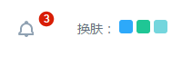

框架动态换肤
不同结构的框架之间不能换肤，同一种结构才可以换肤。换肤需要服务端支持，以java工程为例

步骤：
1，某一套框架皮肤包正常应该有一个叫skin的目录，里面是皮肤资源，它是蓝色系，使用的是blue组件库主题。拷贝另一套相同结构的主页皮肤到这里来，起不一样的名字，例如叫newSkin，这套皮肤是绿色系，使用的是green组件库主题。
2，创建一个叫skin.jsp的文件，用于通过session存储换肤时的配置。该文件代码如下：
<%@page contentType="text/html" pageEncoding="UTF-8"%>
<%
session.setAttribute("skinName",request.getParameter("skinName"));
session.setAttribute("themeColor",request.getParameter("themeColor"));
%>
<% String path = request.getContextPath();%>
<!DOCTYPE html PUBLIC "-//W3C//DTD XHTML 1.0 Transitional//EN" "http://www.w3.org/TR/xhtml1/DTD/xhtml1-transitional.dtd">
<html xmlns="http://www.w3.org/1999/xhtml">
<meta http-equiv="Content-Type" content="text/html; charset=utf-8" />
<head>
<script>
top.window.location="<%=path%>/system/layout/main.jsp";
</script>
</head>
<body>
</body>
</html>
3，在主页顶部写如下代码，设置默认的皮肤。注意要写在dtd声明的下方
<%
if(session.getAttribute("skinName")==null){
session.setAttribute("skinName","skin");
session.setAttribute("themeColor","blue");
}
%>
4，主框架的皮肤配置改为读取session的形式
<link href="<%=path%>/libs/css/import_basic.css" rel="stylesheet" type="text/css"/>
<link href="<%=path%>/libs/skins/<%=session.getAttribute("themeColor")%>/style.css" rel="stylesheet" type="text/css" id="theme" themeColor="<%=session.getAttribute("themeColor")%>"/>
<link href="<%=path%>/system/layout/<%=session.getAttribute("skinName")%>/style.css" rel="stylesheet" type="text/css" id="skin" skinPath="system/layout/<%=session.getAttribute("skinName")%>/"/>
<script type="text/javascript" src="<%=path%>/libs/js/jquery.js"></script>
<script type="text/javascript" src="<%=path%>/libs/js/main.js"></script>
5，在主页最底部将skin.jsp作为iframe嵌入
<iframe id="sessionSkin" src="" width="0" height="0" style="display:none;"></iframe>
6，点击切换皮肤时调用changeSkin()方法,参数分别为皮肤包名称和主题风格
<li onclick="changeSkin('green','newSkin')" class="color2"></li&></>
7，在主页上实现changeSkin()方法
function changeSkin(themeColor,skinName){
top.Dialog.confirm("确定应用该皮肤吗？",function(){
document.getElementById("sessionSkin").src=
"<%=path%>/system/layout/skin.jsp?skinName="+skinName+"&themeColor="+themeColor;
})
}